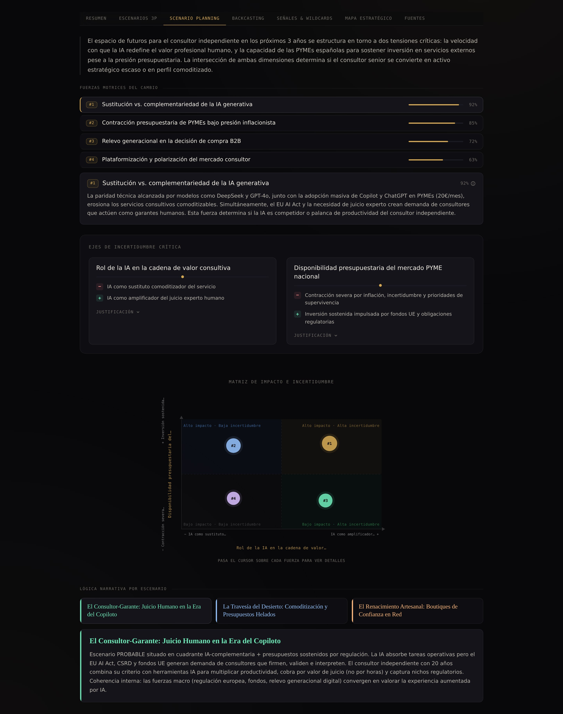
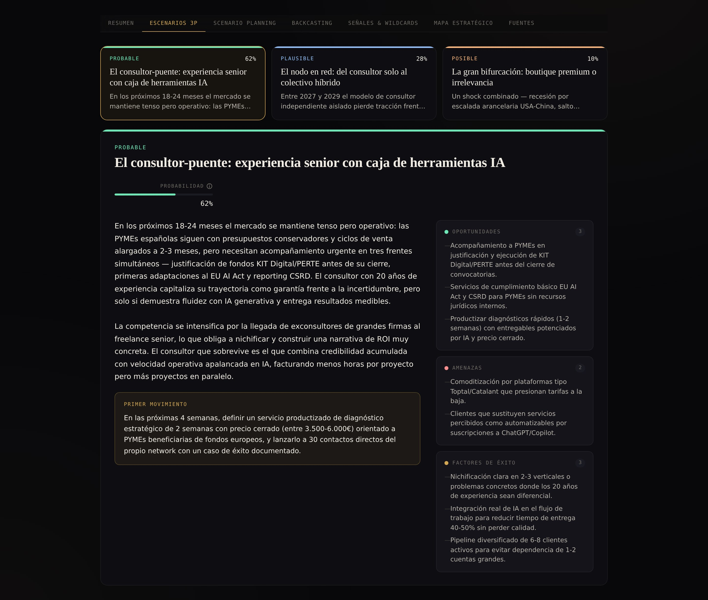
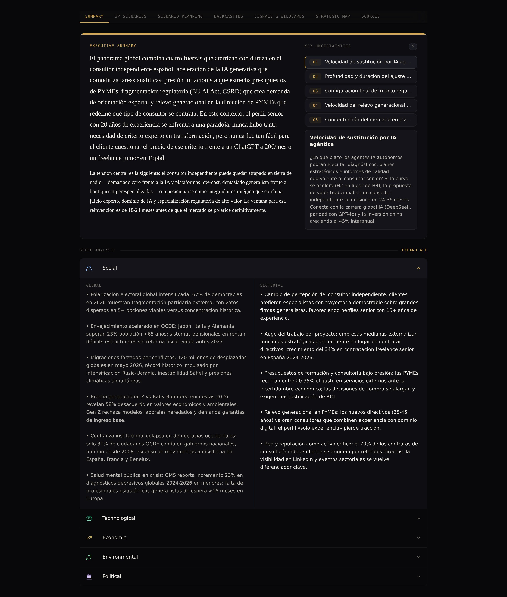
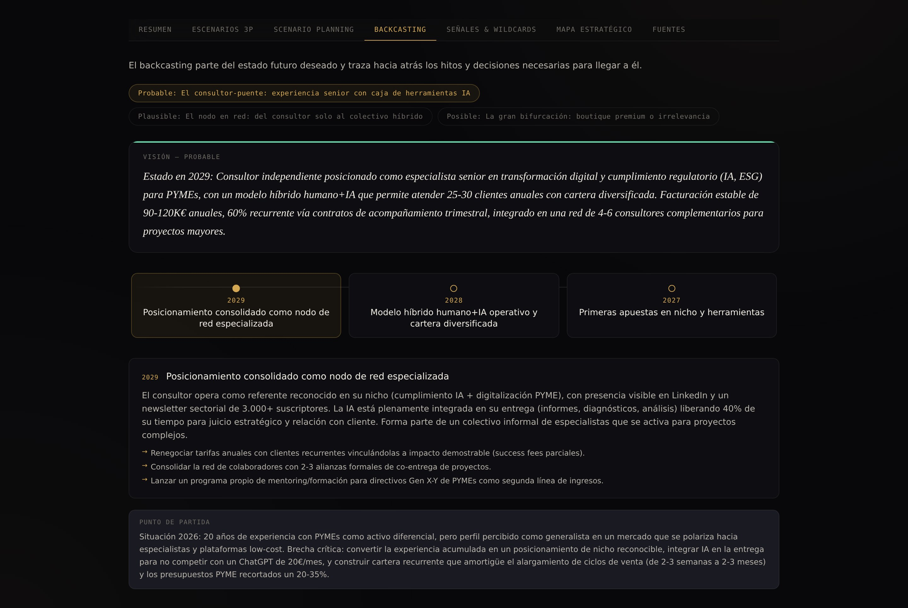

1 / 4
Futuros combina metodología de foresight profesional con inteligencia artificial avanzada — el mismo proceso que usan grandes corporaciones, ahora al alcance de cualquier equipo.
Un informe completo de foresight estratégico, no un resumen genérico. Caso real: análisis sectorial de Restalia (franquicias de restauración) generado por la plataforma.




Misma metodología, mismo rigor, mismo entregable final. Lo que cambia es cuánto pones tú y cuánto pone la plataforma. Empieza con el asistente y profundiza manualmente cuando quieras matizar.
Le cuentas a Futuros tu reto en lenguaje natural. La IA propone los campos STEEP, las dimensiones del horizonte y los drivers; tú aceptas o ajustas con un click. Ideal cuando empiezas, cuando vas justo de tiempo o cuando exploras un sector nuevo.
Introduces tus propios datos, tags y matices. Editas cada dimensión, refinas las probabilidades, ajustas el lenguaje. Para análisis sensibles, sectores donde tienes visión propia o entregables que necesitan reflejar tu criterio palabra por palabra.
Los mismos protocolos que usan gobiernos europeos y think tanks de primer nivel para anticipar el futuro — integrados en una plataforma que cualquier consultor puede usar hoy.
Durante décadas, anticipar el futuro con método ha sido patrimonio de gobiernos, think tanks y consultoras de élite. Futuros pone esa misma técnica en manos de quien tenga una decisión estratégica que tomar — sea un estudiante, un autónomo, una pyme o una gran institución.
El foresight deja de estar encerrado en programas de posgrado y centros de pensamiento. Aplícalo a tu tesis, a un proyecto académico o a tu primer encargo profesional con la misma metodología que usa la Comisión Europea.
Ya no hace falta un equipo de veinte personas detrás para entregar un análisis serio. Tu independencia deja de ser un techo y empieza a ser una ventaja.
Las decisiones que obligaban a contratar a una consultora pueden trabajarse en casa, con método y profundidad, sin desviar el presupuesto del año ni perder semanas de calendario.
La metodología que ya conoces — pero con el control y la velocidad de hacerla en casa. Iteras escenarios antes de llevarlos a la consultora externa, o descubres que ya no la necesitas para esa pregunta.
Suscripción a la plataforma para autonomía total, o servicios de consultoría aumentada cuando necesitas acompañamiento experto. Ambos modelos comparten la misma metodología.
Desde el profesional en solitario hasta la organización con governance completa.
No sustituimos el juicio humano: lo amplificamos. Cinco formas de incorporar foresight estratégico a tu próxima decisión, desde la formación inicial hasta el acompañamiento continuo.
Formación práctica para sacar partido profesional desde el primer día: plantear bien un análisis, leer escenarios 3P, afinar prompts y exportar entregables a cliente.
Sesión conducida sobre un reto real del cliente. STEEP, Horizon Scan, escenarios 3P y backcasting aplicados a un problema propio — sale un mapa estratégico accionable.
Análisis completo en 5 días laborables: diagnóstico, escenarios 3P, backcasting y mapa H1/H2/H3. Sesión de devolución con el equipo decisor incluida.
Un analista experto trabaja como extensión de tu equipo: informes recurrentes, monitorización de señales débiles, briefings para comité y participación en sesiones estratégicas.
Programa para C-level y comités de dirección. Instala un lenguaje común sobre incertidumbre y escenarios — eleva la conversación estratégica de la cúpula, no enseña a usar una herramienta.
Durante décadas, sólo las grandes corporaciones con presupuestos para consultoras de primer nivel han tenido acceso real al diseño de futuros. Sabemos cómo funciona ese mundo desde dentro — y sabemos cómo construir herramientas que lo democraticen.
Más de 20 años diseñando futuros para marcas globales — Nike, IKEA, Coca-Cola, Airbnb, BMW, FC Barcelona — desde agencias como Serviceplan, Young & Rubicam, DDB y Grupo Restalia. Después de dos décadas viendo el proceso desde dentro, fundó Futuros para hacerlo accesible a equipos sin presupuesto de Fortune 500.
Technical Director con 20 años de experiencia en producto en tecnología de vanguardia. Apple, Riot Games, Blizzard Entertainment, Lucasfilm. Diseña la experiencia de producto que hace que la metodología institucional sea utilizable por cualquiera — sin sacrificar la profundidad.
Desarrollador full-stack con doble trayectoria. Empezó en publicidad creativa (HerraizSoto, QyA para Nintendo Ibérica) — viviendo en primera persona la frustración con los procesos estratégicos que Futuros resuelve — antes de virar hacia la ingeniería. Hoy desarrolla para la Generalitat de Catalunya a través de DXC Technology, donde construye sistemas críticos para entidades públicas.